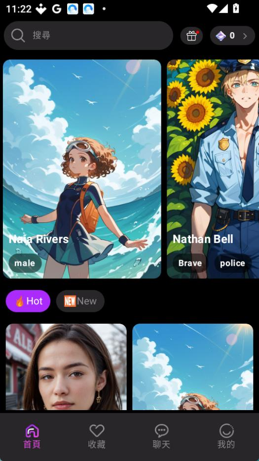

Melia 踩坑实录——五个让你欲哭无泪的手机版应用问题
装过混淆包、清缓存丢记录、消息发不出去——Melia 看着界面简单，实际藏了几个容易踩的坑。这篇文章把我踩过的坑和解法整理出来。
Melia 是一款让你跟 AI 角色聊天的手机应用，官网界面干净、角色库也不小。刚装的时候我以为它就是个普通的聊天 App，点两下就能上手。结果用了大半个月，接连踩了好几个坑——有的让我差点把整个应用卸载重装，有的让我白白浪费了好几天攒的宝石。
这篇就把我踩过的坑按翻车严重程度排个序，每个坑都讲清楚「你看到什么不对劲」「为什么会这样」「怎么救回来或怎么提前避开」。如果你也是刚开始用 Melia，看完这些至少能少浪费一晚上的时间。
坑一：装完才发现下的不是官方包
症状
第一次想换手机重装 Melia，随手搜了一下，从某个应用商店下载装上了。打开之后发现角色库不对劲——首页推的角色跟我之前用的完全不一样，甚至有些角色头像都是模糊的。更诡异的是，看广告补宝石的入口怎么点都没反应。
原因
Google Play 在 2025 年 2 月把 Melia 下架了。下架之后，大量第三方应用商店要么转存的是旧版本，要么被同名应用钻了空子。我那次下的包名是 com.larus.nova——根本不是 Melia 的包名，是另一个名字相似的应用蹭热度。真正的 Melia 包名必须是 com.melia.chataiyys，体积大约 41 MB，签名也跟开发者一致。
版本号也是坑。APKPure 和 APKMirror 这些存档站里，GP 下架时留下的最高版本是 v2.412.171，但开发者的推广站已经更新到 v2.508.061 了。你如果只盯着"存档"两个字，大概率下到旧版，新版修掉的 bug 你全都要再踩一遍。
解法
下载渠道只认开发者的官方下载指向的夸克网盘。这个下载入口是开发者自己挂的，版本最新，包名和签名都对得上。安装前别急着点"下一步"，进应用管理里先看一眼包名是不是 com.melia.chataiyys，再用安全管家扫一下签名——这两步花不了 30 秒，但能帮你避开 90% 的伪装包。
坑二：消息发不出去，宝石余额明明够
症状
右上角宝石数还剩二十多颗，聊天框也能正常打字，但一按发送按钮消息就一直转圈。有时候转个三五秒还能发出去，有时候直接弹一句"发送失败，请重试"。我第一次遇到的时候以为是服务器炸了，关掉应用重开还是不行，差点卸载重装。
原因
后来翻了一下Melia文档才知道，消息发不出去的原因有好几种，宝石不足是最常见的，但不是唯一的。我那次的情况是——Wi-Fi 信号满格，但 Melia 连不上它的 AI 服务端。Melia 是小团队运营的应用，服务器容量有限，有时候会抽风。另外，如果你用的是访客模式（没注册账号），本地数据可能因为缓存损坏而失联，清缓存能解决。还有一种情况我一开始完全没料到——AI 服务端对某些对话内容做了风控，敏感词触发之后消息直接发不出，连个提示都没有。
解法
按顺序排查，别上来就卸载重装：
- 先查网络：Wi-Fi 和流量互切一次，关掉代理/VPN，确认浏览器能正常打开网页。这步解决我那次的问题。
- 重启应用：强制停止再打开，不行就等几分钟——服务器炸了只能等。
- 清缓存：系统设置 → 应用管理 → Melia → 清除缓存。注意访客模式清缓存会丢聊天记录和宝石余额，注册账号的话没事。
- 版本检查：确认是最新版 v2.508.061。旧版的弱网 bug 就是导致消息发不出的原因之一。
- 换个话题：如果是聊到一半突然发不出，重置对话试试——大概率是这段内容触发了风控。
以上都不行的话，只能去"我的"页面反馈开发者了。把设备型号、Android 版本、Melia 版本号和复现步骤写清楚，开发者可能不一定每条都回，但 bug 多了总会修。
坑三：访客模式清缓存，宝石和收藏全没了
症状
前阵子我换了个手机，旧手机上用的是访客模式，没注册账号。某天清理手机空间的时候随手清了 Melia 的缓存，打开一看——宝石归零，收藏的七八款角色全没了，连之前聊了好几天的对话记录也没了。我当时整个人都懵了，赶紧去设置里找有没有"恢复备份"的选项，结果 Melia 压根没有这功能。
原因
访客模式下，所有数据（宝石余额、收藏、聊天记录）都只存在本地 SQLite 数据库里，完全没有云端同步。清缓存 = 删掉整个数据库文件。收藏夹的文档里明确写了这一点，但我当初收藏角色的时候根本没注意这段说明。
解法
如果你觉得这个应用还能用一段时间，花 30 秒注册一个账号。注册之后宝石和收藏会绑定到你的账号上，哪怕换手机、清缓存、甚至卸载重装，登录账号就能全恢复。我后来注册了账号再试，旧手机的收藏和对话完整同步过来了，算是把之前踩的坑挽回来了一部分。
坑四：免费用户每天只能发这么几条
症状
刚开始用的时候每天签到能拿 6~20 颗宝石，看广告还能补 30 颗左右，算下来一天能发七八条消息。听起来好像还行？但聊过几天就会发现，七八条根本不够。跟一个角色认真聊，一轮往返就能耗掉 4~6 条，稍微多说两句就见底了。等你想换个角色试试，宝石已经空了。
更讽刺的是——看广告补宝石有次数限制，每天最多也就看 4~5 次，超了系统就不让你看了，界面上直接没广告入口。Google Play 上有用户评价直接骂这一点："每天只能发 5 条消息，要看 4 个视频才够再发 5 条，这对免费用户来说太讽刺了。"
原因
宝石就是 Melia 的游戏币。签到、看广告这些免费渠道加起来，乐观估计每天也就 40 多颗宝石，约够发 8 条消息。想尽情刷、跟多个角色同时聊、或者角色回复比较长（消耗更多宝石），免费渠道根本撑不住。这是产品设计，不是 bug——免费用户就是免费体验，充值才是主力。
解法
如果你确定想长期用，充钱是绕不开的。不想充的话，那就只能精打细算：只跟一两个最喜欢的角色聊，别同时开多个聊天窗口。广告入口每天记得点满，签到别忘了。收藏夹把喜欢的角色收进去省得翻，Hot 和 New 标签会变，但你收藏的永远在。
坑五：收藏的角色突然从 Hot 里消失了
症状
前几天我在 Hot 标签里找到一个角色，头像好看设定也合口味，当时想着"反正在 Hot 里随时能找到"，就没收藏。过了三天再打开，Hot 列表全换了，那个角色不见了。翻遍 New 标签、翻遍搜索框里输入角色名，死活找不到了。
原因
Hot 和 New 标签的角色列表是运营动态调整的，可能每周更一次或者随时更。你的收藏夹不受影响——收藏是绑在你账号上的，但只有你点了收藏才会进你的收藏夹。我当时没点那个心形图标，Hot 列表一变就找不到了。
解法
发现喜欢的角色，先点收藏再聊。心形图标就在角色详情页头像旁边，点一下实心了就算收藏成功，再点一下取消。收藏之后角色就永远在你的"收藏"标签里，不管 Hot 和 New 怎么换它都在。而且收藏完全不消耗宝石，也没数量限制——为什么不点呢？

防坑清单
如果你不想一个个踩坑，记住这五条就够了：
- 下载只认推广站的夸克网盘链接，包名必须是
com.melia.chataiyys，版本要 v2.508.061 以上 - 换手机或打算长期用，立刻注册账号，别用访客模式攒宝石和收藏
- 消息发不出先查网络和版本，再考虑清缓存和卸载——别上来就重装
- 免费用户宝石有限，精打细算，广告和签到每天别忘
- 发现喜欢的角色先收藏再聊，Hot 标签随时变，收藏夹才是你的
说真的，Melia 这应用看着界面清爽、交互也挺流畅，实际用起来才发现它藏了不少小设计——有的是产品逻辑上的门槛（免费宝石限制），有的是没讲清楚的技术约束（访客模式无云端），还有的是下架后的次生问题（下载渠道混乱）。关于 Melia 的软件包和文档整理，几个主要代码仓库都能找到——习惯用 GitHub 的直接看GitHub，国内网络环境下Gitee和GitCode的副本加载更快。知道这些坑之后，该注册注册、该收藏收藏、该从正规渠道装、该精打细算精打细算，这软件其实相当省心。毕竟核心功能就是跟 AI 角色聊天，只要别踩那几个大坑，用起来还是挺舒服的。